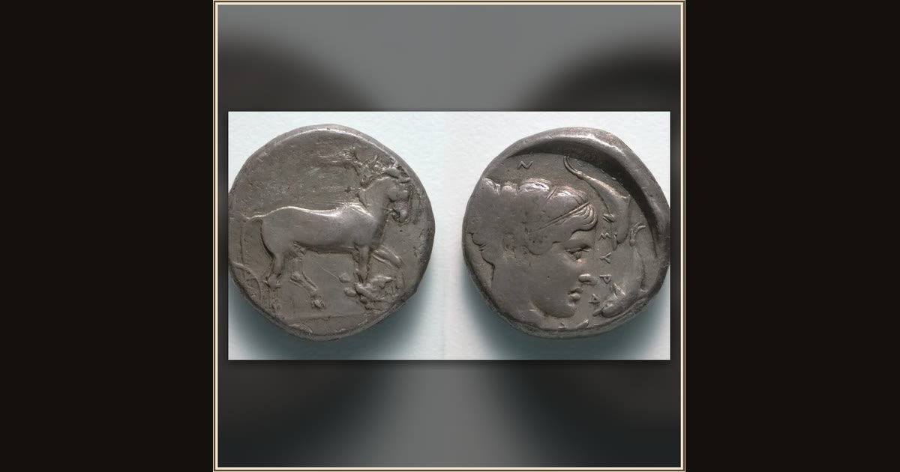

Tetradrachm: Quadriga (obverse); Head of Arethousa (reverse)
Greek, minted at Syracuse (Sicily) · c. 430–420 BCE · cma
Both faces of a Syracusan silver tetradrachm, a chariot team and the head of Arethousa, struck in the years before Nicias warned that the Sicilian cities had money of their own (6.20.4). Explore its place in Thucydides's History of the Peloponnesian War, Book